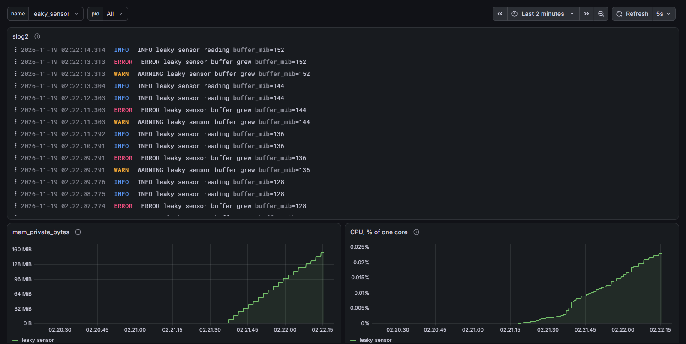

A QNX device in a car or a factory writes its logs to slog2, the QNX system logger. That's fine while you're sitting next to it with slog2info. Once there are a hundred devices in the field, you want their logs and their health in one place.
On Linux, that job usually goes to Fluent Bit, a small CNCF agent that reads local logs and ships them somewhere else. In this codelab you'll use fluent-bit-qnx, a port of Fluent Bit 5.2.0 to QNX 8.0 with two inputs written for QNX, and run it on QNX 8.0 under QEMU.
slog2 input reads the QNX system logqnx_proc input reports per-process memory and CPU timeYou need basic shell and C. No QNX experience is assumed.
You need a Linux x86_64 machine with KVM. Ubuntu 24.04 under WSL2 on Windows 11 works, and it's what this codelab was tested on.
~/qnx800.Install the build tools and QEMU, and let yourself use KVM:
sudo apt install git cmake ninja-build qemu-system-x86 qemu-utils python3 curl patch openssh-client
sudo usermod -aG kvm $USER
Log out and back in (for WSL, run wsl --shutdown from Windows) so the group change takes effect.
QNX's own QEMU codelabs (on Ubuntu, on WSL) boot QNX's Quick Start Target Image. You don't need that image here. The repository you'll clone has a script that builds a small QNX 8.0 image from your own SDP and boots it headless, with SSH on port 2222.
When you're ready, continue.
git clone https://github.com/jakethehoffer/fluent-bit-qnx.git
cd fluent-bit-qnx
patches/ and the two QNX inputs in plugins/.$FBQ_TARGET_DIR, the install folder on the target:source tools/env.sh
tools/build.sh
qcc through CMake and Ninja. The first build takes several minutes. It ends with the path of the QNX binary:build ok: /home/you/build/fluent-bit-qnx/bin/fluent-bit
tools/qemu-up.sh
tools/deploy.sh
qemu-up.sh builds the image with QNX's mkqnximage. Later runs reuse it. deploy.sh copies the binary to $FBQ_TARGET_DIR/bin, along with three small helper programs the repository's own tests use, then runs fluent-bit --version on QNX to prove it starts:QNX target up: ssh -i /home/you/.ssh/qnx_target_ed25519 -p 2222 root@127.0.0.1
deployed helper memhog
deployed helper spinner
deployed helper slog2_emit
Fluent Bit v5.2.0
/data/fluent-bit-qnx/bin/fluent-bit
Positive : The target keeps running in the background. You'll stop it with tools/qemu-down.sh at the end.
You'll use two terminals from here on. The first stays on your machine, in the fluent-bit-qnx folder. The second is a shell on QNX.
cd fluent-bit-qnx
source tools/env.sh
-t gives you a real terminal, so Ctrl+C reaches programs on QNX:ssh $FBQ_SSH_OPTS -t root@127.0.0.1
cd /data/fluent-bit-qnx
uname -a
LD_LIBRARY_PATH=lib bin/fluent-bit --version
lib is where deploy.sh puts any SDP library the target image lacks (qnx/target-libs.txt lists them). This image has every library Fluent Bit needs, so lib is empty, but keeping LD_LIBRARY_PATH makes the same commands work on an image that needs one:QNX qnx-ipc 8.0.0 2026/06/05-16:26:03EDT x86pc x86_64
Fluent Bit v5.2.0
Git commit:
From now on, a shell block runs in this QNX terminal and an sh block runs in the first terminal on your machine.
QNX programs don't write their logs to a file. They register a buffer set with slog2 and write log lines into it, each with a severity. The system logger keeps those lines in memory, and tools read them from there. Start with a program that logs.
mkdir -p my
my/hello_slog.c with this content:#include <stdio.h>
#include <string.h>
#include <unistd.h>
#include <sys/slog2.h>
int main(void)
{
slog2_buffer_set_config_t cfg;
slog2_buffer_t buffer;
int n;
/* One buffer set called hello_slog, with one 4-page buffer. */
memset(&cfg, 0, sizeof(cfg));
cfg.buffer_set_name = "hello_slog";
cfg.num_buffers = 1;
cfg.verbosity_level = SLOG2_INFO;
cfg.buffer_config[0].buffer_name = "main";
cfg.buffer_config[0].num_pages = 4;
if (slog2_register(&cfg, &buffer, 0) != 0) {
fprintf(stderr, "slog2_register failed\n");
return 1;
}
for (n = 1; ; n++) {
slog2f(buffer, 0, SLOG2_INFO, "temperature reading %d: 41 C", n);
if (n % 5 == 0) {
slog2c(buffer, 0, SLOG2_WARNING, "fan is running hot");
}
sleep(1);
}
}
slog2_register creates the buffer set. slog2f logs a formatted line and slog2c a fixed one. The 0 before the severity is a code you can use to tag lines. A line with a severity above verbosity_level (less important) is dropped.qcc -Vgcc_ntox86_64 -Wall -o my/hello_slog my/hello_slog.c -lslog2
fbq_scp my/hello_slog $FBQ_TARGET_DIR/bin/
slog2info:bin/hello_slog &
sleep 6
slog2info -b hello_slog
slog2info leaves the severity out by default, but it's stored with every line:Nov 19 07:26:26.107 hello_slog.643093 main* 0 temperature reading 1: 41 C
Nov 19 07:26:27.107 hello_slog.643093 main 0 temperature reading 2: 41 C
Nov 19 07:26:28.109 hello_slog.643093 main 0 temperature reading 3: 41 C
Nov 19 07:26:29.109 hello_slog.643093 main 0 temperature reading 4: 41 C
Nov 19 07:26:30.110 hello_slog.643093 main 0 temperature reading 5: 41 C
Nov 19 07:26:30.110 hello_slog.643093 main 0 fan is running hot
Nov 19 07:26:31.111 hello_slog.643093 main 0 temperature reading 6: 41 C
Nov 19 07:26:32.112 hello_slog.643093 main 0 temperature reading 7: 41 C
Leave hello_slog running.
Fluent Bit works as a pipeline: inputs make records, and outputs send them somewhere. The slog2 input reads the system log live, the way slog2info -w does, and turns each line into a record.
my/slog.conf:[SERVICE]
Flush 1
Log_Level warn
[INPUT]
Name slog2
Tag slog
match hello_slog
[OUTPUT]
Name stdout
Match *
Format json_lines
match keeps only the hello_slog buffer set. Leave it out to read every buffer set on the system. By default the input starts from now and skips older lines (from_now true).fbq_scp my/slog.conf $FBQ_TARGET_DIR/
-q hides the start-up banner:LD_LIBRARY_PATH=lib bin/fluent-bit -q -c slog.conf
hello_slog line arrives as a JSON record. The first line may be a warning that the input skipped an entry that wasn't plain text, because the input reads text lines only:[2026/11/19 07:20:13.999] [ warn] [input:slog2:slog2.0] slog2 dropped 0, skipped 1
{"date":1795072813.996681,"buffer_set":"hello_slog","buffer":"main","severity":"INFO","severity_num":5,"pid":1392661,"thread_id":1,"code":0,"message":"temperature reading 12: 41 C"}
{"date":1795072814.997759,"buffer_set":"hello_slog","buffer":"main","severity":"INFO","severity_num":5,"pid":1392661,"thread_id":1,"code":0,"message":"temperature reading 13: 41 C"}
{"date":1795072815.998637,"buffer_set":"hello_slog","buffer":"main","severity":"INFO","severity_num":5,"pid":1392661,"thread_id":1,"code":0,"message":"temperature reading 14: 41 C"}
{"date":1795072816.999829,"buffer_set":"hello_slog","buffer":"main","severity":"INFO","severity_num":5,"pid":1392661,"thread_id":1,"code":0,"message":"temperature reading 15: 41 C"}
{"date":1795072816.999831,"buffer_set":"hello_slog","buffer":"main","severity":"WARNING","severity_num":3,"pid":1392661,"thread_id":1,"code":0,"message":"fan is running hot"}
{"date":1795072818.000713,"buffer_set":"hello_slog","buffer":"main","severity":"INFO","severity_num":5,"pid":1392661,"thread_id":1,"code":0,"message":"temperature reading 16: 41 C"}
buffer_set, buffer, severity (as a name), severity_num (slog2's number: 2 is ERROR, 3 WARNING, 5 INFO), pid, thread_id, code and message. The output side doesn't need to know anything about QNX.hello_slog keeps running.Logs say what a program thinks is happening. To see what it's doing to the machine, the qnx_proc input reads every process in /proc with QNX's devctl() calls and reports its threads, CPU time and private memory.
The repository has a demo program for this, leaky_sensor. It logs a reading every second to its own buffer set, and after a delay grows its buffer by 8 MiB every other second, logging a WARNING and an ERROR each time.
qcc -Vgcc_ntox86_64 -O2 -Wall -o my/leaky_sensor demo/target/leaky_sensor.c -lslog2
fbq_scp my/leaky_sensor $FBQ_TARGET_DIR/bin/
my/proc.conf:[SERVICE]
Flush 1
Log_Level warn
[INPUT]
Name qnx_proc
Tag proc
interval_sec 1
match ^(hello_slog|leaky_sensor)$
[OUTPUT]
Name stdout
Match *
Format json_lines
match is a regular expression on the process name, in the same Ruby syntax as Fluent Bit's grep filter. This one keeps your two programs. Leave it out to report every process. interval_sec 1 scans once a second (the default is 5).fbq_scp my/proc.conf $FBQ_TARGET_DIR/
leaky_sensor so it starts leaking after 5 seconds, then run Fluent Bit:bin/leaky_sensor --leak-after 5 &
LD_LIBRARY_PATH=lib bin/fluent-bit -q -c proc.conf
mem_private_bytes for leaky_sensor climb by 8 MiB every other second, while hello_slog stays flat:{"date":1795072828.759436,"pid":1392661,"name":"hello_slog","threads":1,"cpu_ns":2907637,"cpu_user_ns":2907637,"cpu_system_ns":0,"mem_private_bytes":634880}
{"date":1795072828.759458,"pid":1531926,"name":"leaky_sensor","threads":1,"cpu_ns":752538,"cpu_user_ns":752538,"cpu_system_ns":0,"mem_private_bytes":634880}
...
{"date":1795072832.763789,"pid":1392661,"name":"hello_slog","threads":1,"cpu_ns":3146911,"cpu_user_ns":3146911,"cpu_system_ns":0,"mem_private_bytes":634880}
{"date":1795072832.763924,"pid":1531926,"name":"leaky_sensor","threads":1,"cpu_ns":1470287,"cpu_user_ns":1470287,"cpu_system_ns":0,"mem_private_bytes":9027584}
{"date":1795072833.762825,"pid":1392661,"name":"hello_slog","threads":1,"cpu_ns":3440163,"cpu_user_ns":3440163,"cpu_system_ns":0,"mem_private_bytes":634880}
{"date":1795072833.762979,"pid":1531926,"name":"leaky_sensor","threads":1,"cpu_ns":1560868,"cpu_user_ns":1560868,"cpu_system_ns":0,"mem_private_bytes":9027584}
{"date":1795072834.766262,"pid":1392661,"name":"hello_slog","threads":1,"cpu_ns":4806956,"cpu_user_ns":4806956,"cpu_system_ns":0,"mem_private_bytes":634880}
{"date":1795072834.766484,"pid":1531926,"name":"leaky_sensor","threads":1,"cpu_ns":1941073,"cpu_user_ns":1941073,"cpu_system_ns":0,"mem_private_bytes":17420288}
{"date":1795072835.766854,"pid":1392661,"name":"hello_slog","threads":1,"cpu_ns":4882047,"cpu_user_ns":4882047,"cpu_system_ns":0,"mem_private_bytes":634880}
{"date":1795072835.766888,"pid":1531926,"name":"leaky_sensor","threads":1,"cpu_ns":2001943,"cpu_user_ns":2001943,"cpu_system_ns":0,"mem_private_bytes":17420288}
{"date":1795072836.766289,"pid":1392661,"name":"hello_slog","threads":1,"cpu_ns":4928443,"cpu_user_ns":4928443,"cpu_system_ns":0,"mem_private_bytes":634880}
{"date":1795072836.766372,"pid":1531926,"name":"leaky_sensor","threads":1,"cpu_ns":2396259,"cpu_user_ns":2396259,"cpu_system_ns":0,"mem_private_bytes":25812992}
cpu_ns is the process's total CPU time so far (user plus system), so a busy program's figure grows faster.leaky_sensor:slay leaky_sensor
Printing records on the device is a start. Now send them off the device, to Loki (a log store) and Grafana (dashboards) on your machine.
demo/host/host-up.sh
http://127.0.0.1:3000/d/qnx-fleet/qnx-fleet
my/ship.conf, with both QNX inputs and the Loki output:[SERVICE]
Flush 1
Log_Level warn
[INPUT]
Name slog2
Tag slog
[INPUT]
Name qnx_proc
Tag proc
interval_sec 1
match ^(hello_slog|leaky_sensor)$
[OUTPUT]
Name loki
Match *
Host 10.0.2.2
Port 3100
labels job=fluent-bit-qnx
line_format json
10.0.2.2 is how a QEMU guest on user-mode networking reaches your machine. On a real device you'd put your Loki server's address there. The dashboard looks for job=fluent-bit-qnx.fbq_scp my/ship.conf $FBQ_TARGET_DIR/
leaky_sensor that leaks after 20 seconds, then Fluent Bit:bin/leaky_sensor --leak-after 20 &
LD_LIBRARY_PATH=lib bin/fluent-bit -q -c ship.conf
leaky_sensor's log lines with their severity. The middle panel shows its private memory, flat for 20 seconds, then climbing. The bottom panel shows its CPU use.
leaky_sensor:curl -sG http://127.0.0.1:3100/loki/api/v1/query_range \
--data-urlencode 'query={job="fluent-bit-qnx"} | json | buffer_set="leaky_sensor" | severity="ERROR"' \
--data-urlencode 'limit=1'
{"buffer_set":"leaky_sensor","buffer":"main","severity":"ERROR","severity_num":2,"pid":1593366,"thread_id":1,"code":0,"message":"buffer grew buffer_mib=192"}
leaky_sensor:slay leaky_sensor
On a real-time system, the log agent must never hold off the work the device is there to do, and it shouldn't lose records just because the network is down for a minute. QNX makes the first one easy to set and to check. Fluent Bit handles the second with filesystem buffering.
my/agent.conf. It's ship.conf plus four settings:[SERVICE]
Flush 1
Log_Level warn
storage.path /data/fluent-bit-qnx/my-storage
scheduler.cap 10
[INPUT]
Name slog2
Tag slog
storage.type filesystem
[INPUT]
Name qnx_proc
Tag proc
interval_sec 1
match ^(hello_slog|leaky_sensor)$
storage.type filesystem
[OUTPUT]
Name loki
Match *
Host 10.0.2.2
Port 3100
labels job=fluent-bit-qnx
line_format json
retry_limit false
storage.path and storage.type filesystem keep each chunk of records in a file until an output has delivered it. retry_limit false keeps retrying a failed chunk instead of dropping it. scheduler.cap 10 keeps the wait between retries at 10 seconds or less, so delivery resumes soon after the network comes back.fbq_scp my/agent.conf $FBQ_TARGET_DIR/
on -p 8. QNX runs higher priorities first, and ordinary programs run at 10, so at 8 the agent only gets the CPU when the device's own work doesn't need it:LD_LIBRARY_PATH=lib on -p 8 bin/fluent-bit -q -c agent.conf > agent-my.log 2>&1 &
sleep 2
pidin -p fluent-bit -F "%a %b %p %n"
r after it is the scheduling policy, round-robin: pid tid prio name
679958 1 8r bin/fluent-bit
679958 2 8r bin/fluent-bit
679958 3 8r bin/fluent-bit
679958 4 8r bin/fluent-bit
679958 5 8r bin/fluent-bit
...
demo/host/host-down.sh
ls my-storage/*
hello_slog and qnx_proc made while Loki was away are waiting on disk, in chunk files (.flb) under one folder per input:my-storage/qnx_proc.1:
679958-1795073203.700396625.flb 679958-1795073212.732448717.flb
679958-1795073204.702840277.flb 679958-1795073213.729494797.flb
679958-1795073205.714438820.flb 679958-1795073214.721877685.flb
679958-1795073206.719374959.flb 679958-1795073215.752929453.flb
679958-1795073207.745263742.flb 679958-1795073216.733825008.flb
679958-1795073208.721112509.flb 679958-1795073217.751856258.flb
679958-1795073209.726630817.flb 679958-1795073218.730169289.flb
679958-1795073210.726410571.flb 679958-1795073219.727065285.flb
679958-1795073211.725836716.flb 679958-1795073220.737196746.flb
my-storage/slog2.0:
679958-1795073204.433357904.flb 679958-1795073213.40033861.flb
679958-1795073204.978854924.flb 679958-1795073214.238589567.flb
679958-1795073206.229948926.flb 679958-1795073215.340941868.flb
679958-1795073207.333620668.flb 679958-1795073216.458281079.flb
679958-1795073208.439091958.flb 679958-1795073217.559412639.flb
679958-1795073209.13028813.flb 679958-1795073218.78836730.flb
679958-1795073210.235710128.flb 679958-1795073219.248095256.flb
679958-1795073211.337657429.flb 679958-1795073220.349836045.flb
679958-1795073212.440312306.flb
# ls my-storage/*
my-storage/qnx_proc.1:
679958-1795073260.775633715.flb
my-storage/slog2.0:
@@ block 45
# slay fluent-bit hello_slog
[1] - Terminated bin/hello_slog
demo/host/host-up.sh
ls my-storage/*
my-storage/qnx_proc.1:
679958-1795073260.775633715.flb
my-storage/slog2.0:
hello_slog lines from the time Loki was down are there.slay fluent-bit hello_slog
exit
demo/host/host-down.sh
tools/qemu-down.sh
You built Fluent Bit for QNX 8.0, read the QNX system log and per-process memory with it, shipped both to a dashboard, and ran the agent at a priority below the device's real work with records kept on disk through an outage.
tools/demo.sh for the full narrated demo, which also restarts leaky_sensor and checks that its memory drops.docs/porting-notes.md explains each QNX patch.